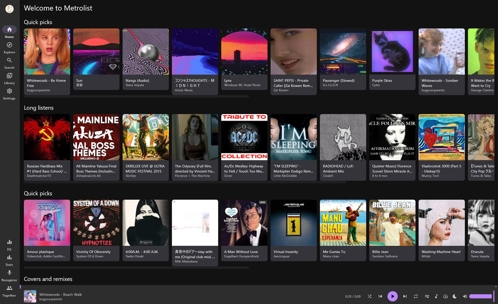

LyrenneYouTube Music for Windows & Linux
A free, open source YouTube Music client for Windows 10, 11 and Linux. Your real library, your real playlists, synced lyrics and offline downloads. No ads, no telemetry.
DownloadWhat It Is
YouTube ships no desktop app for YouTube Music, and a browser tab is not a music player. Lyrenne is a native desktop application for Windows and Linux that signs in to your own account and talks to the same API the mobile app uses.
It is not a wrapper around the website and not a repackaged Android build. It has its own player, database and sync layer, written for the desktop.

Features
Two-way sync
Liked songs, albums, artists and playlists sync in both directions. Edits made on the desktop reach your YouTube Music account instead of stopping at a local copy. Keep several accounts signed in and switch with one click.
InnerTube / SQLDelightA real player
VLC engine with gapless playback, crossfade, Smart Shuffle, a 10-band equalizer with presets, playback speed, sleep timer, skip silence and volume normalization.
VLC / vlcjFive providers
BetterLyrics, LrcLib, KuGou, YouTube lyrics and YouTube transcripts, chained. A track one source misses is usually covered by the next, with word-by-word highlighting where the timing exists.
Synced / PlainDownloads and export
Keep tracks offline, or export a playlist as loudness-normalized MP3s numbered for a car head unit or a USB stick.
ffmpeg / EBU R128The whole feed
Home, Explore, charts, moods and genres, radio, auto-queue, podcasts, and search with filters and suggestions.
ContinuationsNative extras
Media keys, a floating mini player, Discord Rich Presence, Last.fm scrobbling, Listen Together rooms, Shazam recognition and listening stats.
Windows Now Playing / MPRISInstall
Download Lyrenne-X.Y.Z-portable.zip from
the latest release.
Extract it anywhere. C:\Lyrenne works.
Run Lyrenne.exe and sign in with your browser. VLC, ffmpeg and the
Java runtime are already inside the archive, so there is nothing else to install.
Prefer a package manager on Windows? Scoop works:
scoop bucket add lyrenne https://github.com/Doctordefector/scoop-lyrenne
scoop install lyrenneOn Linux, take the
.deb (Debian, Ubuntu and their derivatives) or the .rpm (Fedora)
from the latest release.
It pulls VLC in from your distro, and later updates are one click from Settings.
sudo apt install ./lyrenne_*_amd64.deb
sudo dnf install ./lyrenne-*.x86_64.rpmSteam Deck & iPad
Lyrenne for Decky
YouTube Music in Game Mode. Play your library from the Quick Access Menu while you game, with synced lyrics and its own music volume.
Decky Loader plugin iPadLyrenne for iPad
A YouTube Music player for the iPad's big screen, with synced lyrics, downloads and background play. Sideloaded with a free Apple ID.
iPadOS / SideloadlyQuestions
Is there an official YouTube Music desktop app for Windows?
No. YouTube ships mobile apps and the web player, nothing native for Windows or Linux. Lyrenne is an independent open source client.
Is Lyrenne free?
Yes, free and open source under GPL-3.0. No paid tier, no account of its own, no telemetry.
Do I need a YouTube Music Premium subscription?
No, but it signs in to whichever account you give it, so a Premium account keeps its benefits.
Does it need VLC or Java installed?
No. Both are bundled in the download, along with ffmpeg for exporting.
Does it work on Linux or macOS?
Linux, yes: every release ships a .deb and an .rpm, and
the app updates itself through your package manager. macOS builds are not
published yet.
How do I uninstall it?
On Windows, delete the folder; everything it wrote lives inside it. On Linux,
remove the lyrenne package, and ~/.local/share/lyrenne
if you want your library gone too.